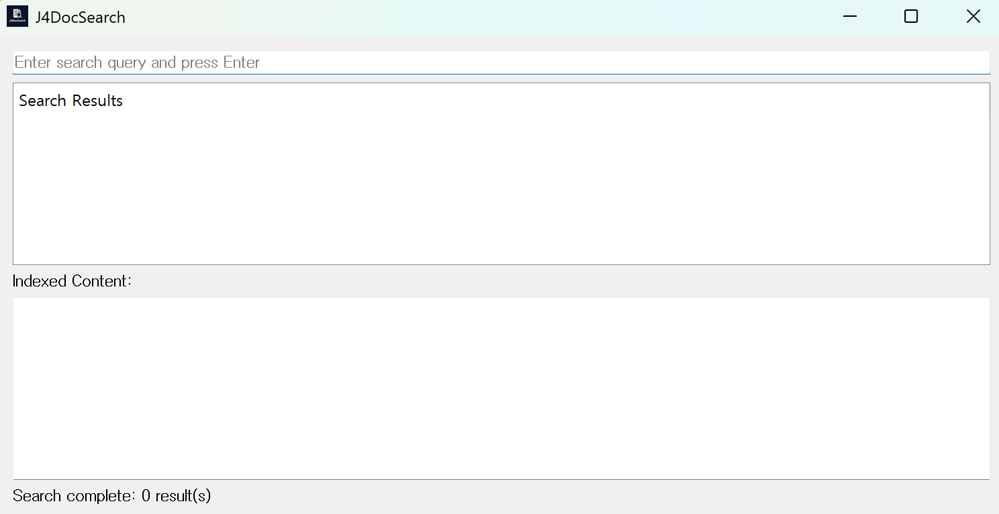

📘 J4DocSearch
J4DocSearch is a high-speed desktop document indexing and search tool designed for Windows environments. It monitors your local drives in real time and enables fast keyword-based search across supported document types.
This standalone, lightweight application requires no external server or database. It is especially useful for users who manage a large volume of documents or frequently need to access document contents quickly.
⬇️ Download Latest Version
📦 Screen Shot

🚀 How It Works
- 🔍 Full Indexing on First Launch: Scans all files on your PC across all local drives and creates a searchable index.
- ⚡ Real-Time Indexing: Automatically updates the index when files are added, modified, or deleted.
- 📁 Changes are reflected instantly in your search results without needing a manual refresh.
🔍 Supported File Types
.docx – Microsoft Word (OOXML).xlsx – Microsoft Excel (OOXML).pptx – Microsoft PowerPoint (OOXML).pdf – PDF files (text-based only).hwpx – HWPX format used by Hancom Office
Only text content is indexed. Binary or image-based content (e.g., scanned PDFs) is not processed.
🖥️ OS Compatibility
- Supported: Windows 10 / 11 (64-bit recommended)
- Requires no administrator privileges
- Microsoft Office or .NET not required
- Distributed as a standalone .exe built from Python
- Real-time monitoring based on Windows file system events
🆓 License
- License: Freeware
- Commercial Use: Allowed
- No license fees or activation required
- Note: Future versions may include advertisements (e.g., banner or popup ads)
- All processing and indexing occurs locally — no data is sent to external servers
🔗 Features
- Easy setup using NSIS installer
- Auto-launch and startup registration support
- System tray with show/hide options
- Duplicate instance prevention
- Keyword highlighting and result grouping